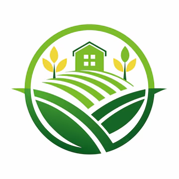
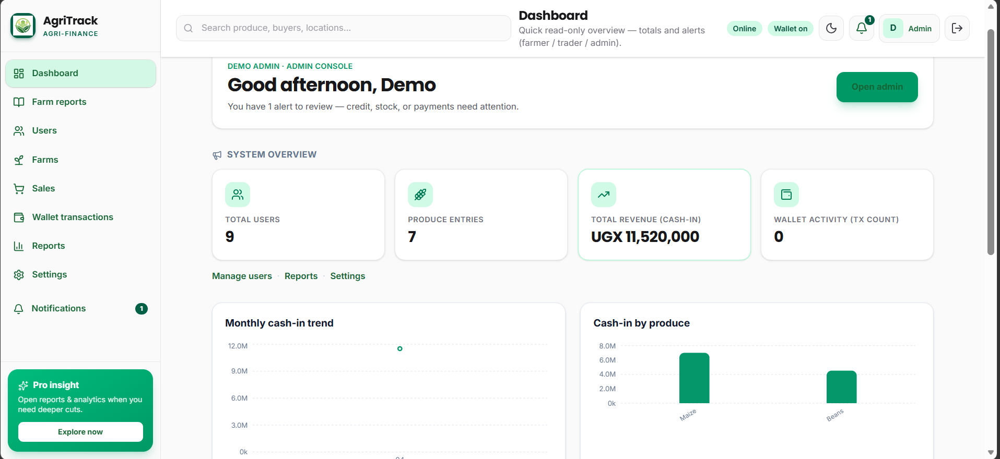
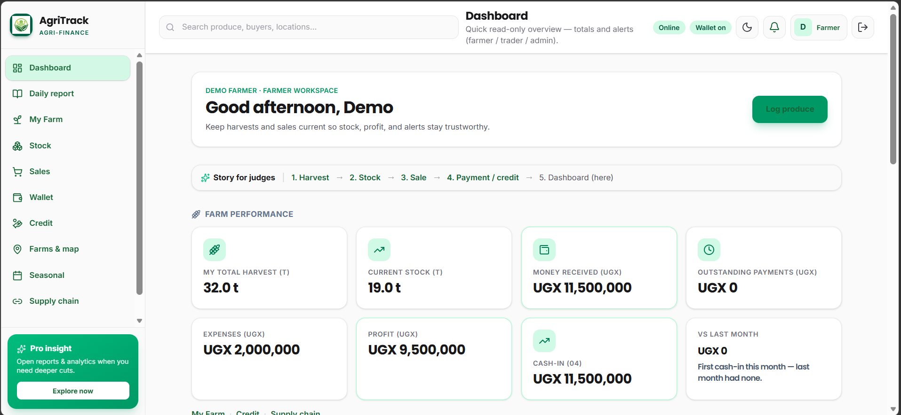
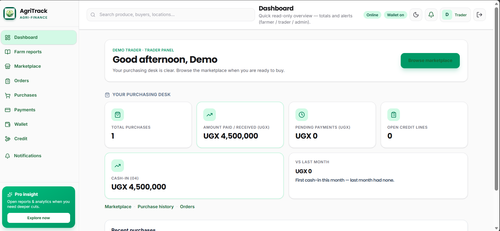
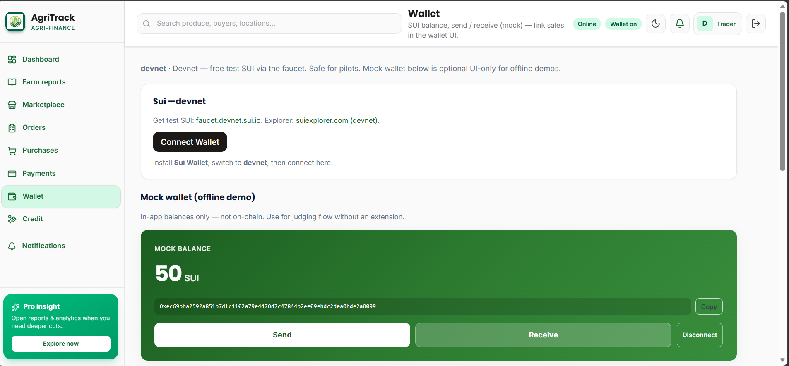
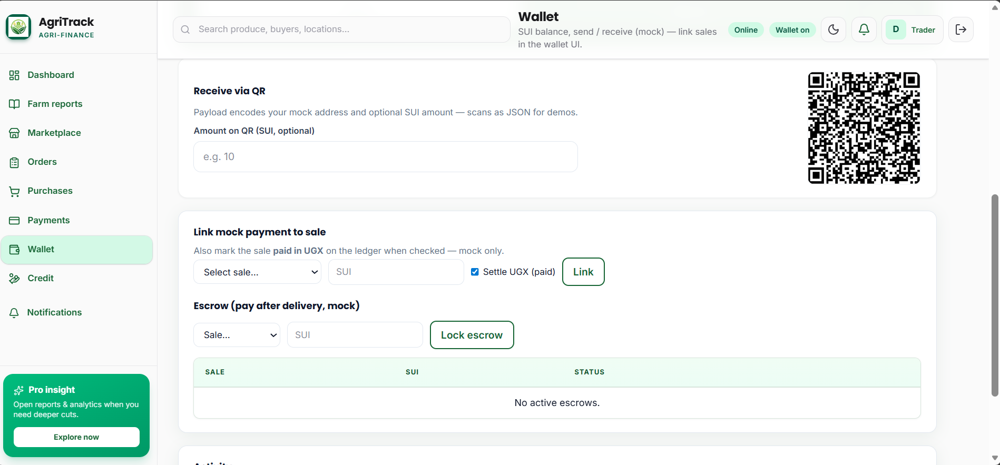

AgriTrackPitch · April 2026
A single place for owners and investors to watch operations and trust what happens with money — from anywhere.
Powered by Sui
Challenge
Answer
Monitor operations and trust the money trail from anywhere.
This is not just farm management — it is trusted, verifiable agricultural operations.
Architecture
From field data and sales to on-chain proof and oversight — one connected flow.
Live view of the system
Product
Product preview
Users, produce, revenue, and charts in one place for oversight.

Product preview
Harvests, stock, and money received — what happens on the farm.

Product preview
Purchases, amounts in UGX, and a clear purchasing desk.

Payments & trust
Connect a real wallet or use mock SUI for testing — same flow.

Payments & trust
QR receive, link a payment to a sale, optional escrow — proof end to end.

Outcomes
Why now
Roadmap
Trust and transparency for the people who feed us.
Questions welcome
Thank you for your time — AgriTrack
Arrows · space · home · end